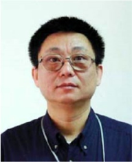

彭翔，深圳大学光电工程学院教授，博士生导师。1981年毕业于天津大学，并于1984年和1989年分别在该校获得硕士和博士学位。1990-1992年作为洪堡学者在斯图加特大学从事研究工作，1992-1998年任天津大学精密仪器与光电子工程学院副教授，1998年晋升教授、博士生导师。2013年1月调入深圳大学光电子学研究所至今任教授、博士生导师。彭翔博士曾在美国休斯敦大学、加拿大卡尔加里大学、香港科技大学访问研究，他在光学信息安全、光学测量、三维成像与造型领域取得了一些有价值的研究成果，先后主持了国家自然科学基金项目7项，中德国际合作项目2项，深圳科技计划项目、广东省科技计划项目，以及企业委托项目二十余项。在国内外学术期刊发表论文150余篇，获得授权发明专利24项（发明专利转让和实施8项），软件著作权4项（转让、实施2项），出版学术专著一部，先后获得德国洪堡基金会研究奖学金、国家教委科技进步奖、天津市青年科技奖、深圳市技术创新奖、深圳市技术发明一等奖、广东省科技进步二等奖。先后指导完成了32名硕士研究生和18名博士研究生的学位论文、出站博士后7名。目前，彭翔正在指导硕士、博士生二十余名，博士后5名。彭翔教授兼任《光学学报》常务编委，天津大学、美国Clemson大学兼职教授，澳大利亚国家研究委员会（ARC）海外评审专家。
作为项目负责人主持的国家自然科学基金项目：
国家自然科学基金项目：“心动周期的计算机辅助激光诊断”（69378020）负责人（1994.1-1996.12）
国家自然科学基金项目：“基于位相映射的三维光学数字成像视觉及其图像理解”（69875013）负责人 (1999.1-2001.12)
国家自然科学基金项目：“多分辨动态三维数字成像及造型”（60275012）负责人（2003.1-2005.12）
国家自然科学基金项目：“基于虚拟光学框架的多维信息隐藏及密码学”，（60472107）负责人（2005.1-2007.12）
国家自然科学基金项目：“嵌入式三维数字成像与建模流水实现的关键技术” （60775021）负责人（2008.1-2010.12）
国家自然科学基金项目：“光学密码分析和光学非对称密码编码”（61171073）负责人（2012.1-2015.12）
国家自然科学基金项目：“基于相空间光学的光场三维成像与显示” (61377017)
负责人（2014.1-2017.12）
NSFC/DFG中-德科学中心项目：“微系统技术中的先进光学制造与测量学”（GZ 398）负责人（2007.3）
中-德国际合作项目（NSFC/DFG中-德科学中心):"Remote Laboratory for Optical Micro Metrology"（GZ 760）负责人（2012.10-2015.10）
学术兼职：
天津大学精密仪器与光电子工程学院兼职教授、博士生导师
Adjunct
Professor, Clemson University, SC, USA (Since 2007)
光学学报，常务编委，（2008年-至今）
Optics and
Photonics Letters (OPL), Topical Editor, World Scientific Publisher, (Since
2007)
Expert of International Standing, Australian Research Council (ARC), (since
2005)
代表性论文、论著
1. Meihua Liao, Wenqi He, Dajiang Lu, Xiang Peng, Ciphertext-only attack on optical cryptosystem with spatially incoherent illumination: from the view of imaging through scattering medium, Scientific Reports, 2017, 7: 41789.
2. Zewei Cai, Xiaoli Liu, Ameng Li, Qijian Tang, Xiang Peng and Bruce Z. Gao, Phase-3D mapping method developed from back-projection stereovision model for fringe projection profilometry, Optics Express 25(2), 1262-1277 (2017).
3. Meihua Liao, Dajiang Lu, Wenqi He and Xiang Peng, Optical Cryptanalysis Method Using Wavefront Shaping. IEEE Photonics Journal, 2017, 9(1): 1-13.
4. Meihua Liao, Wenqi He, Dajiang Lu, Jiachen Wu and Xiang Peng, Security enhancement of the phase-shifting interferometry-based cryptosystem by independent random phase modulation in each exposure, Optics and Lasers in Engineering, 2017, 89: 34-39.
5. Dajiang Lu, Wenqi He, Meihua Liao, Xiang Peng. An interference-based optical authentication scheme using two phase-only masks with different diffraction distances. Optics and Lasers in Engineering, 2017, 89:40-46.
6. Dajiang Lu, Wenqi He, Meihua Liao, Xiang Peng. Discussion and a new method of optical cryptosystem based on interference. Optics and Lasers in Engineering, 2017, 89:13-21.
7. A. K. Singh, G. Pedrini, X. Peng, W. Osten, “Nanoscale measurement of in-plane and out-of-plane displacements of microscopic objects by sensor-fusion”, Optical Engineering, 55(12), 121722 (2016).
8. Zewei Cai, Xiaoli Liu, Xiang Peng, Yongkai Yin, Ameng Li, Jiachen Wu and Bruce Z. Gao, Structured light field 3D imaging, Optics Express 24(18), 20324-20334 (2016).
9. Zewei Cai, Xiaoli Liu, Xiang Peng, Zonghua Zhang, Hao Jiang, Yongkai Yin, and Shujun Huang, Phase error compensation methods for high-accuracy profile measurement, Measurement Science & Technology 27, 045201-045207 (2016).
10.Dajiang Lu, Wenqi He and Xiang Peng. Enhancement of optical encryption based on radial shearing interference. Optics Communications, 2015, 336:77-83.
11.Meihua Liao, Wenqi He, Jiachen Wu, Dajiang Lu, Xiaoli Liu and Xiang Peng, Optical authentication based on moiré effect of nonlinear gratings in phase space, Journal of Optics, 2015, 17: 125704.
12.Y. Yin, M. Wang, Z. Gao, X. L. Liu and X. Peng, Fringe projection 3D microscopy with the general imaging model, Optics Express, 23 (5), 6847-6857 (2015).
13.X. L. Liu, J. Wu, W. Q. He, M. H. Liao, C. G. Zhang, and X. Peng, Vulnerability to ciphertext-only attack of optical encryption scheme based on double random phase encoding, Optics Express, 23 (15), 18955-18968, (2015).
14.J. Z. Peng, Q. Wang, X. Peng, and Y. Yu, Stitching interferometry of high numerical aperture cylindrical optics without using a fringe-nulling routine, J. Opt. Soc. Am A, 32 (11) 1964-1972 (2015).
15.J. Z. Peng, M. Wang, D. Deng, X. Liu, Y. Yin, and X. Peng, Distortion correction for microscopic fringe projection system with Scheimpflug telecentric lens, Appl. Opt. 54 (34) 10055-10062 (2015).
16.Zewei Cai, Xiaoli Liu, Hao Jiang, Dong He, Xiang Peng, Shujun Huang and Zonghua Zhang, Flexible phase error compensation based on Hilbert transform in phase shifting profilometry, Optics Express 23(19), 25171-25181 (2015).
17.C. G. Zhang, W. Q. He, J. Wu, and X. Peng, Optical cryptosystem based on phase truncated Fresnel diffraction and transport intensity equation, Optics Express, 23 (7), 18955-18968, (2015).
18.D. J. Lu, W. Q. He, X. Peng, Enhancement of optical image encryption based on radial shear interferometer, Optics Communications 336, 77–83 (2015).
19.Y. Guan, Y. K. Yin, A. Li, X.L. Liu, and X. Peng, Dynamic 3D imaging based on acousto-optic heterodyne fringe interferometry, Optics Letters, 39 (12), 3678-3681 (2014).
20.C. G. Zhang, M. H. Liao, W. Q. He, and X. Peng, Cipher-text only attack on joint transform correlator encryption system, Optics Express, 21 (23), 28523-28530 (2013).
21.Meihua Liao, Wenqi He, Xiang Peng, Xiaoli Liu, Xiangfeng Meng, Cryptanalysis of optical encryption with a reference wave in a joint transform correlator architecture, Optics & Laser Technology, 2013, 45: 763-767.
22.Dajiang Lu, Wenqi He, Xiang Peng. Optical image encryption based on a radial shearing interferometer. Journal of Optics, 2013, 15(10):105405.
23.W. Q. He, X. F. Meng, and X. Peng, Asymmetric cryptosystem using random phase binary modulation based on mixture type of Yang-Gu algorithm: Comment, Optics Letters, 38 (20), 4044-4047 (2013).
24.H. Lai, W. Q. He, and X. Peng, Optical Hash function based on two beam-interference, Applied Optics, 52 (25), 6213-6219 (2013).
25.D. Lu, W. He and X. Peng, Optical image encryption based on radial shearing interferometer, Journal of Optics, 15, 105405 (6pp) (2013).
26.A. Li, X. Peng, Y. Yin, X. Liu, Q. P. Zhao, K. Koener, W. Osten, Fringe projection based quantitative 3D microscopy, Optik, 124, 5052-5056 (2013)
27.D. He, X. Liu, X. Peng, Y. Ding, Z. Gao, Eccentricity identification and compensation for high-accuracy of 3D measurement, Measurement Science and Technology, 24, 075402 (7 pp.) (2013)
28.M. H. Liao, W. Q. He, X. Peng, X. L. Liu, X. F. Meng, Cryptanalysis of optical encryption with a reference wave in a joint transform correlator architecture, Optics & Laser Technology 45, 763–767 (2013).
29.Q. Liu, Z. Luo, S. He, X. Peng, S. Xiong, Y. Wang, X. Zhong, X. Zhou, C.A. Eisenberg, and B.Z. Gao, “Conditioned serum-free medium from umbilical cord mesenchymal stem cells has anti-photoaging properties,” Biotechnology Letters, 35(10), 1707-14 (2013).
30.W. Qin, L. Schmidt, X. Yang, L. Wei, T. Huang, J. X. Yun, Z. Ma, X. Peng, X. Yuan, and B.Z. Gao, “Laser Guidance in a Microfluidic Biochip,” Journal of Biomedical Optics, 18 (6), 060502 (2013).
31.W. Q. He, X. Peng and X. F. Meng, Optical multiple-image hiding based on interference and grating modulation, J. Opt. 14, 075401 (10pp) (2012).
32.W. Q. He, X. Peng, X. Meng, and X. Liu, Optical hierarchical authentication based on interference and hash function, Applied Optics, 51(32): 7750-7757 (2012).
33.Y. K. Yin, X. Peng, A. Li, X. L. Liu, and Bruce Z. Gao, Calibration of fringe projection profilometry with bundle adjustment strategy, Optics Letters, 37 (4), 542-545 (2012).
34.Y. K. Yin, X. Peng, X. L. Liu, A. Li, X. H. Qu, Calibration strategy of optical measurement network for large-scale and shell-like objects, Optics Communications 285, 2048–2056, (2012)
35.X. M. Liu, X. Peng, Y. K. Yin, A. M. Li, X. L. Liu, and W. Wu, Generation of photorealistic 3D image using optical digitizer, Applied Optics, 57 (7), B1-B8 (2012).
36.W. Qin, Y. Shao, H. Liu, X. Peng, H. B. Niu, and Bruce Gao, Addressable discrete-line-scanning multi-photon microscopy based on a spatial light modulator, Optics Letters, 37 (5), 827-830 (2012).
37.Y. Shao, W. Qin, H. Liu, J. Qu, X. Peng, H. B. Niu, and Bruce Z. Gao, Addressable multi-regional and multifocal multi-photon microscopy based on a spatial light modulator, Journal of Biomedical Optics, 17(3) 030505-1 (2012).
38.Y. Shao, W. Qin, H. Liu, J. Qu, X. Peng, H. Niu, and B.Z. Gao, “Ultrafast, Large-Field Multiphoton Microscopy Based on an Acousto-Optic Deflector and a Spatial Light Modulator,” Optics Letters, 37(13), 2532-4 (2012).
39.Y. Shao, W. Qin, H. Liu, J. Qu, X. Peng, H. Niu, and B.Z. Gao, “Multifocal Multiphoton Microscopy Based on a Spatial Light Modulator,” Applied Physics B, 107(3), 653-7 (2012).
40.Y. Shao, H. Liu, W. Qin, J. Qu, X. Peng, H. Niu, and B.Z. Gao, “Addressable, Large-Field Second Harmonic Generation Microscopy Based on 2D Acousto-Optical Deflector and Spatial Light Modulator,” Applied Physics B, 108(4), 713-16 (2012).
41.H. Z. Cai, J. Y. Liu, X. Peng, et al, Large-format micro-channel plate gated framing camera, Nuclear Instruments and Methods in Physics Research A 677, 14–17 (2012).
42.X. Peng, X. L. Liu, Y. Yin, and A. Li, Optical measurement network for large-scale and shell-like objects, Optics Letters, 36 (2), 157-160 (2011).
43.W. Qin, X. Peng, X. F. Meng and Bruce Z. Gao, Vulnerability to chosen-plaintext attack of optoelectronic information encryption with phase-shifting interferometry, Optical Engineering 50(6), 065601 (2011).
44.W. Qin, X. Peng, X. F. Meng, Cryptanalysis of optical encryption schemes based on joint transform correlator architecture, Optical Engineering 50(2), 028201 (2011).
45.W. Q. He, X. Peng, X. F. Meng and Bruce Z. Gao, Universal and special keys based on phase-truncated Fourier transform, Optical Engineering (OE Letters), August 2011/Vol. 50(8) 080501-1 (2011).
46.H. Z. Cai, J. Y. Liu, X. Peng, L. Niu, W. Peng, H. B. Niu, J. Long, Note: Non-gain micro-channel plate gated framing camera, Review of Scientific Instruments, 82, 056102 (2011).
47.W. Qin and X. Peng, Asymmetric cryptosystem based on phase-truncated Fourier transforms, Optics Letters, 2010, 35(2),118-120 (2010)
48.W. Q. He, X. Peng, W. Qin, and X. F. Meng, The keyed optical Hash function based on cascaded phase-truncated Fourier transforms, Optics Communications, 283, 2328–2332 (2010)
49.W. Qin and X. Peng, Vulnerability to known-plaintext attack of optical encryption schemes based on two fractional Fourier transform order keys and double random phase keys, J. Opt. A: Pure Appl. Opt. 11, 075402 (8pp) (2009).
50.X. F. Meng, X. Peng, L. Z. Cai, A. M. Li, Z. Gao and Y. R. Wang, Cryptosystem based on two-step phase-shifting interferometry and the RSA public-key encryption algorithm, J. Opt. A: Pure Appl. Opt. 11, 085402 (9pp) (2009).
51.Z. Ma, Karen J. L. Burg, Y. Wei, X.-C. Yuan, X. Peng, and Bruce Z. Gao, Laser-guidance based detection of cells with single-gene modification, Applied Physics Letters, 92, 213902 (2008).
52.J. Tian, Y. B. Ding, X. Peng, Self-calibration of a fringe projection system using epipolar constraint, Optics & Laser Technology 40, 538 – 544 (2008).
53.X. Peng, P. Zhang, H. Wei, B. Yu, Known-plaintext attack on optical encryption scheme based on double random phase keys, Optics Letters, 31(8), 1044-1046 (2006)
54.X. Peng, H. We, P. Zhang, Chosen-plaintext attack on lensless double-random phase encoding in the Fresnel domain, Optics Letters, 31(22), 3261-3263 (2006)
55.J. Tian and X. Peng, Three-dimensional vision from a multi-sensing mechanism, Applied Optics, 45 (13), 3003-3008 (2006)
56.X. Peng and J. Tian, “Three-Dimensional Multi-resolution Imaging and Modeling”, in Book: New Development in Laser and Electro-Optics Research, Chapter 4, Edited by William T. Arkin, Nova Science Publisher, USA, 2006.
57.E. B. Li, X. Peng, J. Xi and J. F. Chicharo, J. Q. Yao, Multi-frequency and multiple phase shift sinusoidal fringe projection for 3D profilometry, Optics Express, 13 (5), 1561-1569 (2005).
58.X.-C. Yuan, W. X. Yu, M. He, J. Bu, and W. C. Cheong, H. B. Niu and X. Peng, Soft-lithography-enabled fabrication of large numerical aperture refractive micro-lens array in hybrid SiO2 –TiO2 sol-gel glass, Applied Physics Letters, 86, 114102 (2005)
59.J. Lin, X.-C. Yuan, S. H. Tao, X. Peng and H. B. Niu, Deterministic approach to the generation of modified helical beams for optical manipulation, Optics Express, 13 (10), 3862-3867 (2005).
60.J. Tian and X. Peng, Three-dimensional digital imaging based on shifted point-array encoding, Applied Optics, 44 (26), 5491-5496 (2005).
61.X. Peng, J. Tian, P. Zhang, L. Wei, W. Qiu, E. Li, D. Zhang: 3D vision with dual-acousto-optic deflections encoding. Optics Letters, 30(15), 1965-1967 (2005)
62.S. H. Tao, X.-C. Yuan, H. B. Niu and X. Peng, Dynamic optical manipulation using intensity patterns directly projected by a reflective spatial light modulator, Review of Scientific Instruments 76, 056103 (2005)
63.Z. Zhang, D. Zhang, X. Peng, Performance analysis of 3D full-field sensor based on fringe projection, Optics and Lasers in Engineering 42, 341-353 (2004).
64.X. Peng, P. Zhang, H. B. Niu, Architecture design of virtual optics data security using parallel hardware and software, Optik 115 (1), 15-22 (2004).
65.Z. Y. Liu, Y. B. Ding, X. Peng, Generalized iso-surface equation and its applications to multi-view range image integration, Optik 115 (2), 71 –76 (2004)
66.X. Peng, P. Zhang, L. L. Cai, Information security system based on virtual optics imaging methodology and public key infrastructure, Optik 115 (9), 420–426 (2004).
67.Z. Zhang, X. Peng and D. Zhang: “Transformation Image into Graphics”, in Book: Integrated Image and Graphics Technologies, Chapter 7, 111-129, edited by David Zhang, Mohamed Kamel and George Baciu, Kluwer Academic Publishers, USA. 2004.
68.X. Peng, P. Zhang, H. B. Niu, Audio-signal watermarking in 3D space based on virtual optics, Optik 114 (10), 451 –456 (2003).
69.X. Peng, L. F. Yu, L. L. Cai, Digital watermarking in three-dimensional space with a virtual-optics imaging modality, Optics Communications, 232, 235–245 (2003).
70.X. Peng, Z. Cui, L. L. Cai, L. F. Yu, Digital audio signal encryption with a virtual optics scheme, Optik 114 (2), 69–75 (2003).
71.Z. H. Zhang, D. Zhang, X. Peng, X. Hu, Color texture extraction from fringe image based on full-field projection, Optical Engineering, 42(7) 1935–1939 (2003).
72.X. Peng, Z. L. Yang, H. B. Niu, Multi-resolution reconstruction of 3-D image with modified temporal unwrapping algorithm, Optics Communications, 224, 35–44 (2003).
73.X. Peng, P. D. Gao, Z. Y. Liu, H. B. Niu, Date reduction and extroplation for 3D digital images, Optik 114 (6), 266–270 (2003).
74.X. Peng, L. F. Yu, and L. L. Cai, Double-lock for image encryption with virtual optical wavelength, Optics Express, 12 (1), 41-45, (2002).
75.X. Peng, Z. Cui , T. N Tan, Information encryption with virtual-optics imaging system, Optics Communications, 232, 235–245 (2002).
76.L. F. Yu, X. Peng, L. L. Cai, Parameterized multi-dimensional data encryption by digital optics, Optics Communications 203, 67–77 (2002).
77.L. Li, N. Schemenauer, X. Peng, Y. Zeng, P. Gu, A reverse engineering system for rapid manufacturing of complex object, Robotics and Computer Integrated Manufacturing 18, 53 – 67 (2002).
78.C. F. Lo , X. Peng, L. L. Cai, Surface normal guided two-dimensional phase unwrapping, Optik 113 (10), 439–447 (2002).
79.X. Peng , Z. Zhang, Hans J. Tiziani, 3D imaging and modeling-Part I: acquisition and registration, Optik 113 (10), 448–452 (2002).
80.X. Peng , Z. Zhang, Hans J. Tiziani, 3D imaging and modeling-Part II: integration and duplication, Optik 113 (10), 453 –458 (2002).
81.X. Peng, S. M. Zhu, C. J. Su, and Mtichell Tseng: Model-based digital Moire topography. Optik 110 (4), 184-190 (1999)
82.X. Peng, S. M. Zhu, C. J. Su, and Mtichell Tseng: A simple method of generating pseudo-solid texture for optical 3-D image. Optik, 110 (7), 317-322 (1999).
83.X. Peng, S. M. Zhou, Z. Gao: An automatic demodulation technique for a non-linear carrier fringe pattern. Optik, 100 (1), 11-14 (1995).
84.X. Peng, Z. Gao, S. M. Zhou: Surface contouring by a new type of digital moiré technique. Optik 100 (2), 63-67 (1995).
85.Y. L. Zou, X. Peng, H. J. Tiziani: Two-wavelength DSPI surface contouring through the temperature modulation of a laser diode. Optik, 94 (4), 155-158 (1993).
86.X. Peng, Y. L. Zou, G. Pedrini and H. J. Tiziani: A simplified multi-wavelength ESPI contouring technique based on a diode laser system 2: Automatic fringe analysis. Optik, 92 (3) 114-118. (1993).
87.Y. L. Zou, H. Y. Diao, X. Peng and H. J. Tiziani: Geometry for contouring by electronic speckle pattern interferometry based on shifting illumination beams. Applied Optics, 31 (31), 6616-6621 (1992).
88.Y. L. Zou, H. Y. Diao, X. Peng and H. J. Tiziani: Contouring by electronic speckle pattern interferometry with quadruple-beams illumination. Applied Optics, 31 (31), 6599-6620 (1992).
89.X. Peng, Y. L. Zou, H. Y. Diao and H. J. Tiziani: A simplified multi-wavelength ESPI contouring technique based on a diode laser system. Optik, 91 (2), 81-85 (1992).
90.H. Y. Diao, Y. L. Zou, X. Peng and H. J. Tiziani: Calibration of the inclined contour planes formed on ESPI and optimization of ESPI optical system for contouring. Optik, 91 (2), 71-75 (1992).
91.H. Y. Diao, X. Peng, Y. L. Zou and H. J. Tiziani: Contouring using two-wavelength electronic speckle pattern interferometry employing dual-beam illumination. Optik, 91 (1), 19-23 (1992).
92.X. Peng, H. Y. Diao, Y. L. Zou and H. J. Tiziani: Contouring by modified dual-beam ESPI based on tilting illumination beams. Optik, 90 (2), 61-64 (1992).
93.X. Peng, H. Y. Diao, Y. L. Zou and H. J. Tiziani: A novel approach to determine de-correlation effect in a dual-beam electronic speckle pattern interferometry. Optik, 90 (2), 129-133 (1992).
94.X. Peng, Y. Liu, S. N. Ma and S. H. Ye: Correlation properties of dynamic speckles and velocity measurement using photon counter directly coupled to a microcomputer. Optik, 80 (1), 19-21 (1989).
95.S. N. Ma and X. Peng: Statistical properties of superposed dynamic speckle via dual scattered light. Optik, 80 (4), 184-186 (1988).
96.彭翔，张鹏，位恒政，“光学信息安全导论”，科学出版社，北京，2008
专利和软件著作权
[1]彭翔，刘晓利，李阿蒙。智能三维视觉软件，软件著作权，证书号：软著登字第0168576号，登记号：2009SR041577，中国国家版权局，2009
[2]彭翔，刘星明，刘晓利，李阿蒙。一种物体的三维真实感重建方法、系统及电子设备，国家发明专利，申请号：201210396557.2，申请日：2012.10.18（已收到授权通知）
[3]彭翔，何懂，刘晓利。摄像机投影变换中圆形标志点的圆心偏差修正方法及系统，国家发明专利，专利号：ZL201210302599.5，授权日：2016.1.20
[4]彭翔，殷永凯，刘晓利，李阿蒙。基于光束平差原理的条纹投影三维测量系统及其标定方法，国家发明专利，专利号：ZL201210014327.5，授权日：2014.1.17
[5]彭翔，郭继平，李阿蒙，刘晓利。一种三维成像方法及系统，国家发明专利，专利号：ZL201010121122.8，授权日：2012.5.14
[6]彭翔，郭继平，李阿蒙，刘晓利。一种三维建模方法及系统，国家专利，专利号：ZL201010121138.9，授权日：2011.12.14
[7]彭翔，殷永凯，刘晓利，李阿蒙。一种基于自适应标靶的视觉测量系统及其标定方法，国家专利，专利号：ZL201110003909.9，授权日：2013.03.20
[8]彭翔，刘晓利，田劲东. 一种深度像匹配方法, 国家专利，专利号：ZL200710073297.4，授权日：2009.03.11
[9]刘晓利，何懂，彭翔。三维人体数字化系统软件，软件著作权，证书号：软著登字第0804097号，登记号：2014SR134856，中国国家版权局，2014.9.9
[10]刘晓利，李阿蒙，殷永凯，彭翔，深圳大学。坩埚自动光学三维检测系统，软件著作权，证书号：软著登字第0226062号，登记号：2010SR037779，中国国家版权局，2010
[11]刘晓利，何懂，彭翔，李青会。基于多传感阵列与平台旋转的全自动三维成像系统软件v1.0，软件著作权，证书号：软著登第0855352号，登记号：2014SR186116，中国国家版权局，2014
[12]刘晓利，蔡泽伟，彭翔，何文奇，姜昊。一种相位误差补偿方法及装置，PCT，CN2015/088878,2015.09.02
[13]刘晓利，何懂，陈海龙，彭翔，徐晨。一种三维人脸重建方法及系统，PCT，CN2015/083889,2015.07.13
[14]刘晓利，何懂，彭翔。基于两轴旋转平台的三维数据获取系统及获取方法，国家发明专利，申请号：201410415211.1，申请日：2014.8.20
[15]刘晓利，何懂，彭翔，李阿蒙。人体三维成像方法及系统，国家发明专利，申请号：201410458109.X，申请日：2014.9.10 （同时PCT检索，PCT，CN2015/076869并进入美国阶段）
[16]刘晓利，姚梦婷，殷永凯，彭翔。高鲁棒性的标志点解码方法与系统，国家发明专利，专利号：ZL201410413706.0，授权日：2016.2.14（同时PCT检索，PCT，CN2015/076869并进入美国阶段）
[17]刘晓利，彭翔，陈海龙，何懂。自动获取物体表面完整三维数据的方法及系统，国家发明专利，专利号：ZL201210247352.8，授权日：2016.1.20
[18]刘晓利，彭翔，殷永凯，何懂。一种标靶校正方法及系统，国家专利，专利号：ZL201010580900.X，授权日：2014.05.09
[19]刘晓利，彭翔，李阿蒙，殷永凯。一种大型薄壳物体表面的三维检测系统及其检测方法，国家发明专利，专利号：ZL20100288154.7，授权日：2012.4.9
[20]彭翔, 何文奇, 祁永坤. 基于虚拟光学的加密方法及装置, 中国专利, 申请号: 200910105285.4. 申请日: 2009年1月24号, 授权日: 2012年5月2号
[21]彭翔, 祁永坤, 关颖健. 数字水印嵌入和检测方法及装置, 中国专利, 申请号: 200910104813.4. 申请日: 2009年1月5号, 授权日: 2011年1月5号
[22]彭翔, 张鹏, 位恒政. 基于虚拟波前编码的非对称加解密方法及装置, 中国专利, 申请号: 200610014905.X. 申请日: 2006年7月25号, 授权日: 2009年8月12号
[23]彭翔, 张鹏, 牛憨笨. 基于虚拟成像的信息隐藏加/解密方法, 中国专利, 申请号: 03130532.6. 申请日: 2003年8月4号, 授权日: 2006年8月9号
[24]彭翔, 张鹏, 牛憨笨. 基于虚拟光学的三维数字水印嵌入/检测方法及装置, 中国专利, 申请号: 03130553.9. 申请日: 2003年8月11号, 授权日: 2005年9月21号